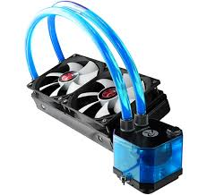

il existe 2 types de refroidissements: le watercooling et le ventirad

Watercooling: Système de refroidissement par eau. Très utilisé pour refroidir le processeur ou la carte graphique, il a une capacité de dissipation bien supérieure que l'aircooling.
Ventirad: Contraction des mots ventilateur et radiateur. On le retrouve sur le processeur le plus souvent. Son rôle est de refroidir le processeur par air (aircooling) qui chauffe énormément et rapidement.